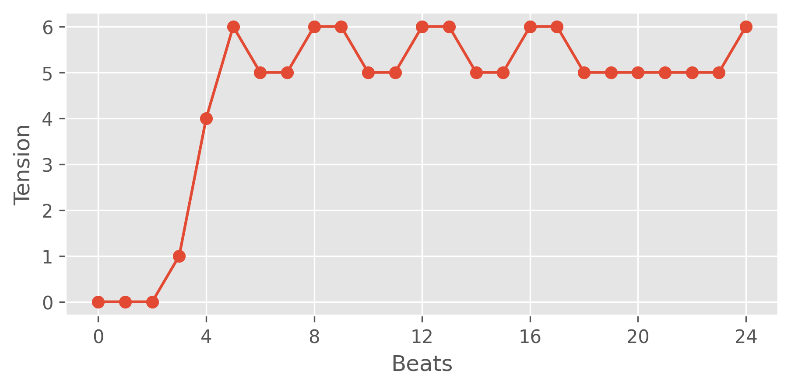

Matthew Caren, Heidi Lei
Recommended browsers: Chrome, Firefox, Safari.
We use Chew and Herreman's "ribbon" model of tonal tension to evaluate the degree of musical tension over time. We evaluate the overall degree of tension in successive quarter-note windows by measuring the cloud diameter of the set of all sounding pitches.
Below is an example of the results of this tension model applied to a musical example (as well as a simple implementation of Lerdhal's model of tonal tension, for comparison).
Listen to the musical exerpt here:
These examples were produced by our model, which is fine-tuned to generate music that adheres to a desired tension curve. We found that these the perceived adherence of these results with the input tension curves was often ambiguous, despite quantitative evidence that shows significant correlation (see below).
Listen here:
Listen here:
Quantitatively, we found that our model adhered to target tension "control" curves with statistically significant correlation, exhibiting that our model did learn the desired relationship (despite the generated results sometimes being qualitatively unclear). This suggests that our system could be improved by using a more perceptually-accurate tension metric, and/or that listeners have a very high threshold for the amount of tension coherence needed to perceive a relationship.
We observed that the computed tension metric did not always clearly match with perceived tension, even in our training data. Below is an example musical excerpt and accompanying extracted tension from our training dataset.
Listen here: